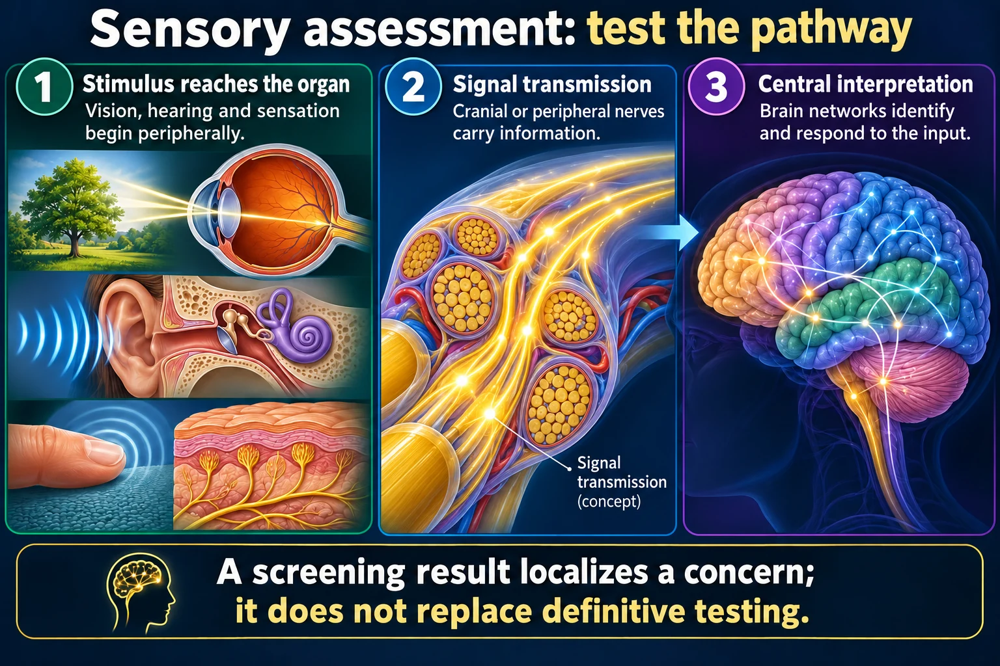

Central vision goes, peripheral vision stays — the exact opposite of glaucoma. Dry vs wet, and what actually slows it.

Macular degeneration takes the middle of the picture and leaves the edges. Glaucoma does the reverse. Seeing the four fields side by side is the fastest way to keep them apart.
A screening result localizes a concern; it does not replace definitive testing.
Stimulus reaches the organ
Vision, hearing and sensation begin peripherally.
Signal transmission
Cranial or peripheral nerves carry information.
Central interpretation
Brain networks identify and respond to the input.
Vision
Acuity, fields, pupils and eye movements test different functions.
Hearing
Screening and Weber/Rinne tests provide clues; audiometry establishes thresholds.
Sensation
Compare sides, modalities and distribution while accounting for cognition and communication.
The macula is the small central patch of retina that does detailed vision. Reading, faces, fine work — all macula.
So macular degeneration takes CENTRAL vision and leaves the periphery. Glaucoma does the reverse.
| Central vision | Peripheral vision | |
|---|---|---|
| Macular degeneration | LOST — blur or blank spot | Preserved |
| Open-angle glaucoma | Preserved until late | LOST — tunnel vision |
| Cataract | Whole field cloudy, glare at night | |
Patients can still walk around a room but cannot read or recognize a face. That functional split is exactly how exam questions describe it.
| DRY (atrophic) | WET (exudative) | |
|---|---|---|
| Share of cases | ~85–90% | ~10–15% |
| Mechanism | Macular cells thin and atrophy; drusen deposits | New leaky vessels grow under the retina |
| Onset | Gradual, over years | Sudden, over days to weeks |
| Hallmark | Slow central blurring | Straight lines look wavy (metamorphopsia) |
| Treatment | Supplements, monitoring | Anti-VEGF injections into the eye |
Wavy or bent straight lines - door frames, tiles, text - is the sign of WET macular degeneration and needs urgent referral. It is treatable if caught early.
A simple grid of straight lines with a central dot. The patient covers one eye, stares at the dot, and reports any wavy, missing or distorted squares.
Used daily at home — it is how conversion from dry to wet gets caught in time.
Unmodifiable: age over 60, family history, light-colored eyes.
These newly drawn concept diagrams consolidate the retired illustration sets. The accompanying study notes and original handout links remain on this page.